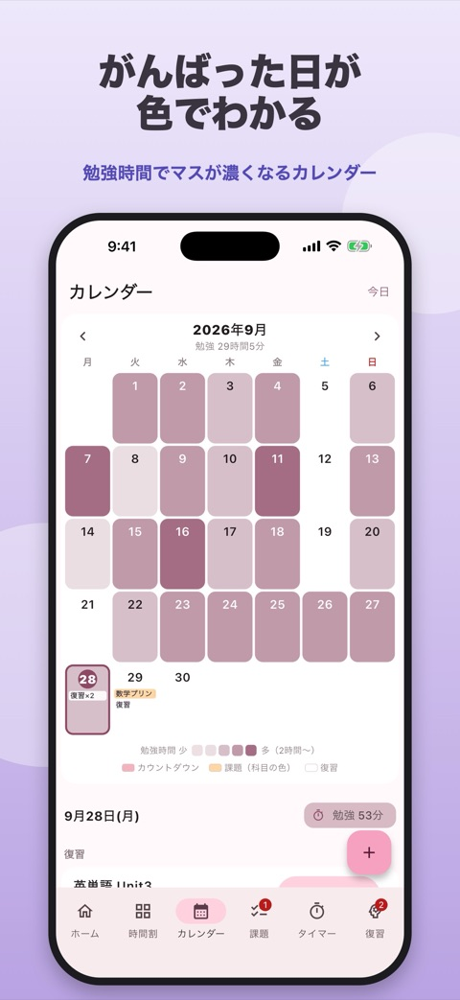
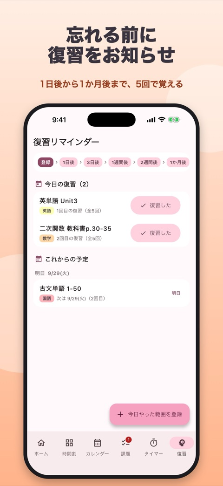

StudyLog
時間割・課題・勉強タイマー
中高生・大学生の勉強を、
まるごと管理。
時間割・課題・勉強タイマー・テストまでのカウントダウン・復習リマインダーが、これひとつに。今日やることがホームでひと目でわかります。



できること
勉強に必要なものを、ひとつのアプリにまとめました。
- ホーム今日の授業、締切が近い課題、今日の復習、テストまでの日数がひと目でわかります。
- 時間割曜日×時限のマスをタップして科目を登録。7限・8限や土曜授業にも対応。
- 課題締切を「今日」「明日」「今週」に分けて表示。近づくと通知でお知らせ。
- 勉強タイマーポモドーロとストップウォッチで記録。週間グラフや科目別の円グラフも。
- カレンダー勉強した時間で日付の色が濃くなる、がんばりが見えるカレンダー。
- 復習リマインダー忘却曲線にあわせて 1日後・3日後・1週間後・2週間後・1か月後 にお知らせ。
- カウントダウン定期テスト・模試・受験など、大事な日まで「あと◯日」を表示。
- ウィジェットテストまでの日数、今日の時間割、締切が近い課題をホーム画面に。
画面


サポート
入力したデータはすべてスマホの中だけに保存され、外部に送信されることはありません。
不具合やご要望は youki.kisimoto@gmail.com までお送りください。
プライバシーポリシー